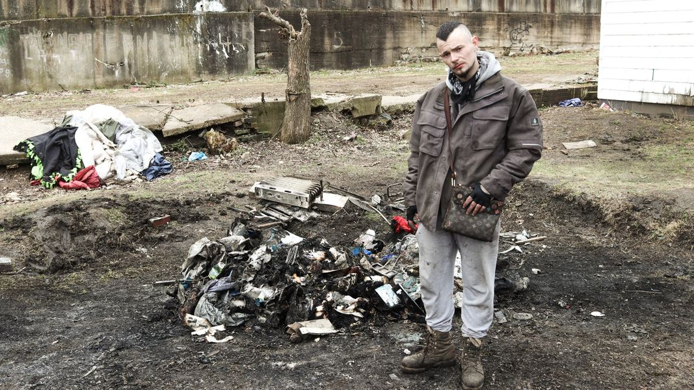

Timeline photos
This is my friend Dustin standing next to what remained of his tent that burned to the ground 2 nights ago.
Dustin is a young man who has been homeless for years. He has very significant mental health issues compounded by drug addiction.
I one time found Dustin in the middle of Dave's Supermarket parking lot pulling off all his clothes and yelling into the wind that he would kill anyone who came near him.
Dustin was the person who a drug dealer and his enforcers tried to cut off his leg with a machete on my property.
Dustin scares people. And that makes Dustin a target.
I couldn't get a clear picture of what happened that caused the fire. It could have been an accident. It could have been intentional. Dustin has enemies.
But I got another picture that was VERY clear. When you are homeless and your tent burns down, homeless service providers don't show up to help you, the Red Cross doesn't come with supplies and gift cards, mental health providers don't show up. THE ONLY PERSON that showed up bright and early the next day was the inspector to take pictures of the scene so he can continue to build a case against me.
Now Dustin is in the wind. His mom lives in the apartment building beside us and would come visit him. Dustin and I have a very good relationship. I've been able to get him to a mental health professional before. I could have tried again. I could have worked on getting his identification, getting food stamps, getting disability income. But now he's gone.
I asked him where he was going to stay. He said, "here and there."
He was clearly depressed and defeated. He had just moved into that tent.
Why can't a guy like me be able to care for a guy like Dustin? Why am I the enemy for daring to care for a person that clearly needs so much help?
I just watched him walk away as I thought about how that inspector probably was so excited to report back about the deplorable mess at the Houseless Movement Garden.